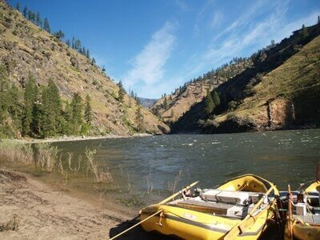
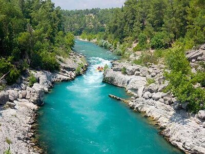
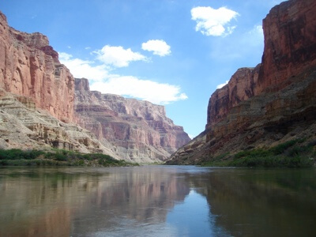
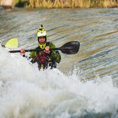
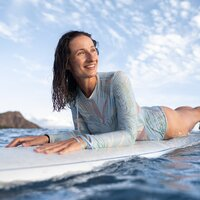

The Rivers
Main Fork of the Salmon River, Idaho
Nestled deep in the Frank Church Wilderness of No Return winds the Salmon river. The Salmon was given the nickname long ago as the River of No Return by the people living near it because of the number of folks that came to visit and fell so in love with the rugged beauty of the river that they never left. Herds of elk and deer graze on the hillsides around the river and bear and bighorn sheep are also commonly sighted. The river corridor is also lined with awe inspiring ponderosa pine which tower over the sandy beaches in the campsites and provide shelter from sun or rain when needed. Let's not forget the rapids! They range from class I-IV. The Salmon is one of the longest undammed rivers in the United States. As a free flowing river the water is higher, faster, and colder in the early summer and lower, slower, and warmer in the late summer. There are good rapids all summer...but families with children who like to swim tend to appreciate the late summer's slower, warmer water more.
Desolation and Gray Canyon, Utah
Winding through canyons in central Utah, in some of the most desolate land anywhere, the Green river flows towards the mighty Colorado river and the sea. High grey stone cliffs, beautiful desert scenery, and great rapids have made this run famous. This 84-mile trip runs from from Sand Wash to Swaseys Rapid (just outside Green River Utah) and boasts outstanding scenery, interesting geologic formations, evidence of prehistoric and historic human activity, and great whitewater opportunities. Desolation is rated a Class II/III and is usually done in 6 days Desolation Canyon has been recognized as a National Landmark. This designation is based on the uniqueness and rich history that the canyon tells.
Grand Canyon, Arizona
This is the grand daddy of all canyons and the grand daddy of all river trips. You will never forget your visit to the Grand Canyon. Grand Canyon river rafting combines world-class whitewater with breathtaking scenery to make one truly unforgettable river experience. The canyon is filled not only with exhilarating whitewater rapids, but with side canyons and ancient indian ruins accessible only by river. CLASS I - X: The Grand Canyon uses a unique river rating scale. The rapids in the Canyon are technically rated I - X ( 1 - 10) to accommodate such a wide variety of rapids and river variances. However, most people are familiar with the regular I - V river rating scale, so we often refer to both.
Meet Your Rafting Guides
Tiffany Woods, 25
"Tiff" was born with an oar in her hand. As a junior kayaking national champion she doesn't need an excuse to get into the water. She loves adventure and gets in the boat with noobies or hardened experts. If you have kids in your group she is very experienced in making sure the little ones feel safe and have a great time. With more than 12 years of rafting and kayaking experience, she will take you through the roughest patches and leave you wanting to go again.
Rufio Gonzales, 42
Rufio has traveled far and wide to experience the rush of a white water tumble. He would be the first to say that rafting is his life. He grew up in Colorado and knows the rivers of the mountain west better than his own backyard. With over 10,000 hours of rafting adventures there is nothing he hasn't seen yet, and he will stay cool even in the wildest water rodeo.
Taylor McKay, 28
Her friends call her "Tiny" but don't be fooled by her nickname. She might not be tall in stature, but she is a powerhouse when it comes to white water rafting. Taken rafting by her father since she was a very young girl, she has a wealth of knowledge when it comes to staying safe on the waves and navigating through the wildest patches. She is also an expert on outdoor survival and you cannot spend any amount of time with her without learning something new. She is our newest team member and has rafted all over the globe. Finally settling down in northern Utah, she is living her dream of combining her passion for teaching with the white water.
All our guides hold the IRF GTE Certification Award and are Wilderness Medicine certified. They undergo regular, extensive physical examinations and we have high standards for training and interpersonal skills. Please contact us with any questions or concerns!
"Our vision here at Wild Oar is to give our customers the experience of a lifetime. Everyone working with us and for us has one thing in common - they are all full of passion for the outdoors, for adventure, and for white water rafting. Whether our paddlers are young or old, we want them to experience the rush of battling the waves of a wild river and feel the gratification of having conquered." Sam Hollister, Founder and CEO of Wild Oar, LLC